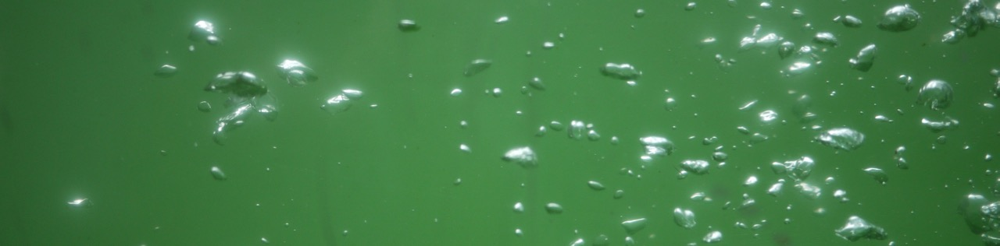

Welcome
If you are here, you might be interested in checking out some of the things I have done. At least that is the purpose of this page, for now anyway – to serve as a portfolio, a complement to my resume and LinkedIn profile.
The more recent creations live at GitHub, check them out below (more info in the respective README.md file).
Some older creations are documented in pages here at this site, using text and videos. Except where noted, all work is done by me.
Some projects
This is an application to monitor our Jenkins and Gerrit status – build and test jobs plus incoming and outgoing code reviews – in a simple but effective and non-intrusive manner.
A demo application for Flatfrog multi touch screens. Don't know if it was ever used, but here it is – a kind of an unfinished game with lots of bubbles.
Another Flatfrog demo, even less finished than Bubbles. It is a synthesizer with aftertouch controlling sound parameters.
A Windows demo application developed at work in 2010, with a game easter egg developed by me.
An OS X demo application developed at work in 2010, similar to the Windows app above, but without game.
An OS X prototype application for making simple animated movies – developed at home, by me, in 2010.
A little about various music/audio related electronic projects I have made.